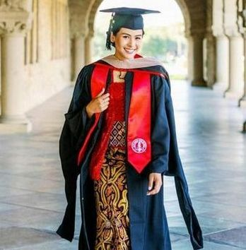
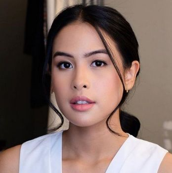
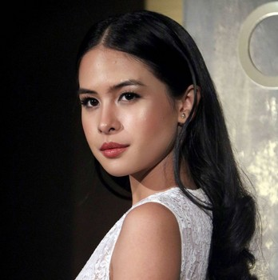

"Tidak ada mimpi yang terlalu tinggi. Tak ada mimpi yang patut untuk diremehkan. Lambungkan setinggi yang kau inginkan dan gapailah dengan selayaknya yang kau harapkan"
Ayunda Faza Maudya atau yang terkenal dengan nama Maudy Ayunda adalah seorang aktris dan penyanyi asal Indonesia kini berumur 29 tahun. Berawal dari ikut casting di sekolah, Maudy Ayunda menjadi jatuh cinta dengan dunia hiburan. Nama Maudy Ayunda pun mulai terkenal sebagai artis dan penyanyi Indonesia. Kemampuan akting dan menyanyi Maudy Ayunda di dunia hiburan memang sangat luar biasa, ditambah lagi jika Maudy memiliki paras yang cantik dan pintar.
More AboutWhat I am Expert In
Film yang Dibintangi Maudy Ayunda. Memulai karir di dunia akting sejak 2005, hingga ada begitu banyak film yang sudah rilis. Ini membuktikan, bukan cuma punya paras yang cantik tapi juga bakat akting.
Read MoreMaudy Ayunda telah merilis tiga album studio, dua album mini, dan lebih dari 25 singel. Awalnya ia dikenal sebagai aktris film, yang kemudian terjun ke dunia musik pada tahun 2011 dengan meluncurkan album Panggil Aku.
Read Moreblog
Gallery
Maudy Ayunda sebagai penulis berharap, jika pesan-pesan yang dibagikannya di dalam buku ini juga bisa bermanfaat untuk orang lain.
Maudy Ayunda rilis Album Kedua Berisi 'Moments' Penting dalam Hidup. Album ini jadi self-reflection Maudy terhadap momen yang sudah terjadi.
Maudy Ayunda Rilis Album Oxygen. Maudy berperan ganda dalam album ketiganya kali ini, yakni sebagai penyanyi, penulis lagu dan produser.
Maudy Ayunda sebagai Brand Ambassador Pantene. Tak hanya memiliki rambut indah, Maudy berprestasi di bidang akademik maupun seni.
Maudy Ayunda ditunjuk menjadi Juru Bicara Presidensi G20 Indonesia. Salah satu alasannya yaitu Maudy menguasai bahasa Inggris.
Maudy Ayunda merupakan lulusan dari Oxford University dengan predikat cumlaude di jurusan PPE atau Politic, Philosopy, and Economics.
Maudy Ayunda Borong Dua Gelar S2 di Stanford University dengan jurusan jurusan administrasi bisnis dan juga pendidikan.
Maudy Ayunda menikah dengan pria asal Korea Selatan, Jesse Choi yang merupakan teman kuliahnya di Stanford University.
Silakan hubungi tim dukungan kami. Kami siap membantu Anda menyelesaikan setiap kendala atau memberikan informasi yang diperlukan. Terima kasih atas kerjasama dan kesabaran Anda."
Copyright © 2024 | hysaTech. All Rights Resserved